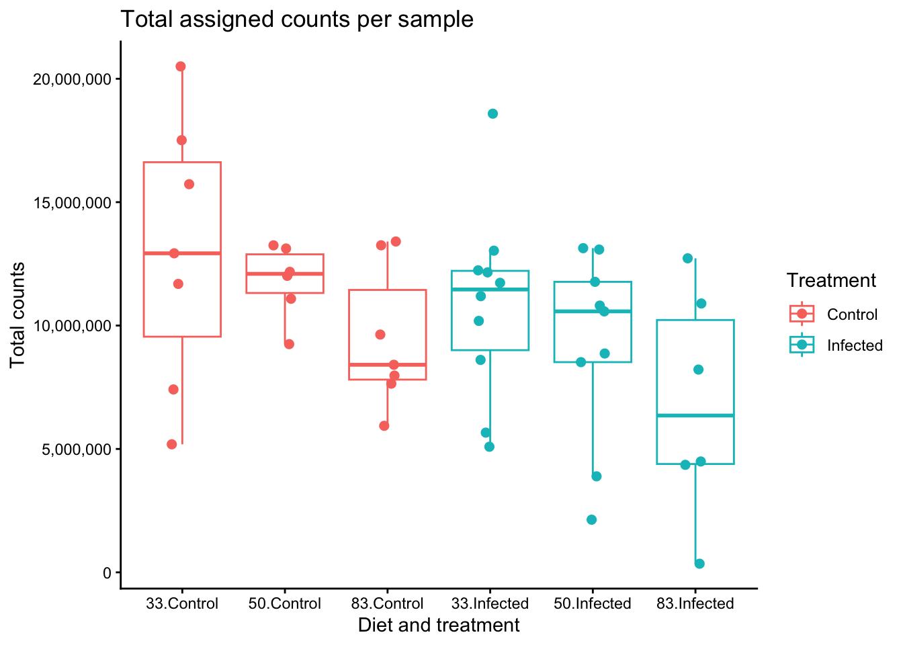
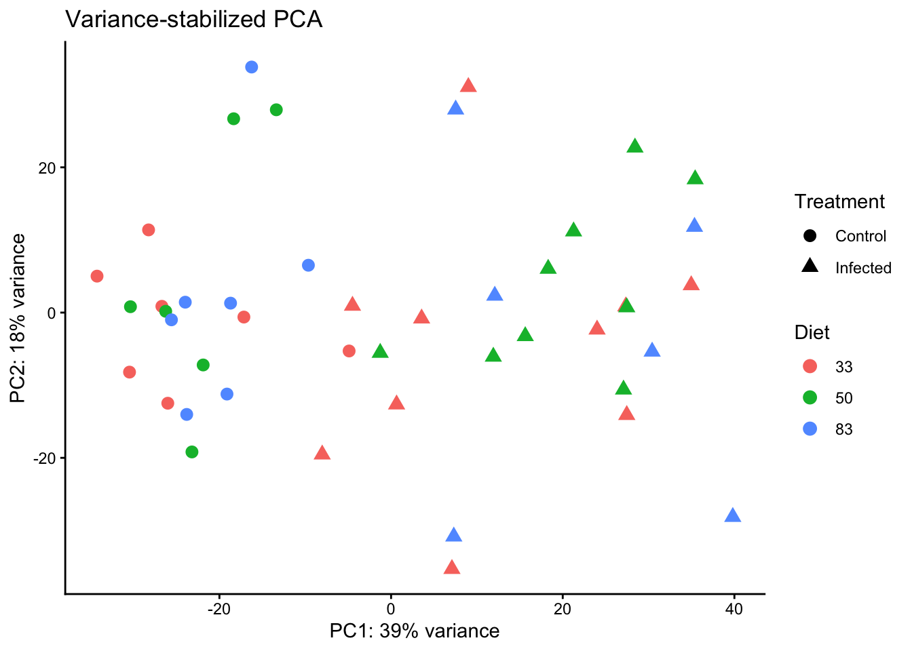
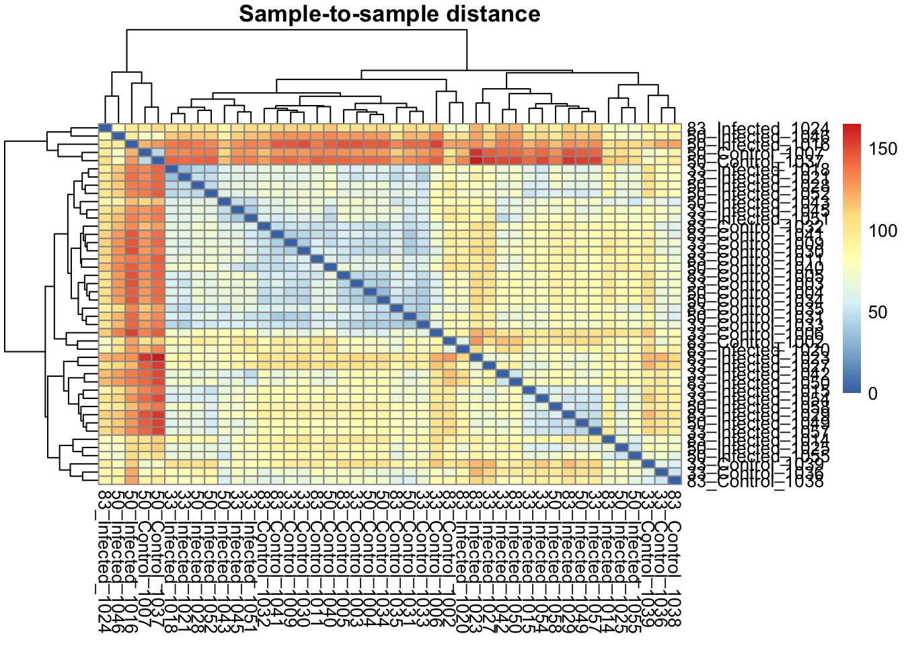
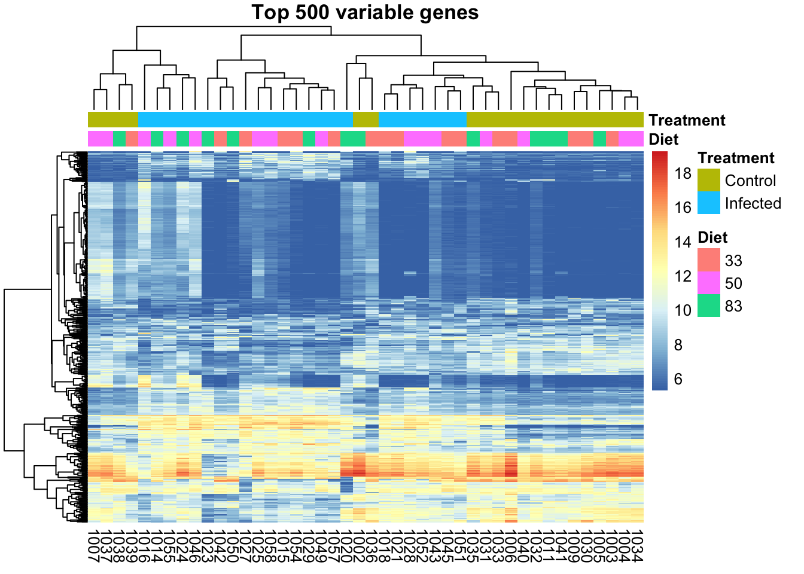

Last updated: 2026-07-04
Checks: 7 0
Knit directory:
gregaria-diet-infection-interaction/
This reproducible R Markdown analysis was created with workflowr (version 1.7.2). The Checks tab describes the reproducibility checks that were applied when the results were created. The Past versions tab lists the development history.
Great! Since the R Markdown file has been committed to the Git repository, you know the exact version of the code that produced these results.
Great job! The global environment was empty. Objects defined in the global environment can affect the analysis in your R Markdown file in unknown ways. For reproduciblity it’s best to always run the code in an empty environment.
The command set.seed(20260427) was run prior to running
the code in the R Markdown file. Setting a seed ensures that any results
that rely on randomness, e.g. subsampling or permutations, are
reproducible.
Great job! Recording the operating system, R version, and package versions is critical for reproducibility.
Nice! There were no cached chunks for this analysis, so you can be confident that you successfully produced the results during this run.
Great job! Using relative paths to the files within your workflowr project makes it easier to run your code on other machines.
Great! You are using Git for version control. Tracking code development and connecting the code version to the results is critical for reproducibility.
The results in this page were generated with repository version fb64139. See the Past versions tab to see a history of the changes made to the R Markdown and HTML files.
Note that you need to be careful to ensure that all relevant files for
the analysis have been committed to Git prior to generating the results
(you can use wflow_publish or
wflow_git_commit). workflowr only checks the R Markdown
file, but you know if there are other scripts or data files that it
depends on. Below is the status of the Git repository when the results
were generated:
Ignored files:
Ignored: data/raw_read_counts/DESeq2_output/overlap_DEGs/
Ignored: scripts/.RData
Ignored: scripts/.Rhistory
Untracked files:
Untracked: data/reference/
Untracked: manuscript/.DS_Store
Untracked: manuscript/materials_methods_results_updated_no_rRNA.md
Untracked: output/manual-validation/
Untracked: output/rmd_runs/deg-overlap-prioritization_20260704-000130/
Untracked: output/rmd_runs/infection-within-diet-deg_20260703-225633/ .png
Untracked: output/rmd_runs/publication-figures_20260703-225720/.DS_Store
Untracked: output/rmd_runs/study-design-data_20260704-001519/
Untracked: output/rmd_runs/workflow-reproducibility_20260704-001522/
Unstaged changes:
Modified: .DS_Store
Modified: analysis/07-deg-overlap-prioritization.Rmd
Modified: analysis/09-outliers-load-enrichment.Rmd
Modified: analysis/11-outlier-sensitivity.Rmd
Modified: data/metadata/mehreen_metadata_no_outliers.txt
Deleted: manuscript/materials_methods_results_draft.md
Modified: output/.DS_Store
Modified: output/rmd_runs/.DS_Store
Deleted: output/rmd_runs/infection-within-diet-deg_20260703-225633/infection_deg_burden_by_biotype_diverging_barplot.png
Note that any generated files, e.g. HTML, png, CSS, etc., are not included in this status report because it is ok for generated content to have uncommitted changes.
These are the previous versions of the repository in which changes were
made to the R Markdown
(analysis/03-count-qc-exploration.Rmd) and HTML
(docs/03-count-qc-exploration.html) files. If you’ve
configured a remote Git repository (see ?wflow_git_remote),
click on the hyperlinks in the table below to view the files as they
were in that past version.
| File | Version | Author | Date | Message |
|---|---|---|---|---|
| html | fb64139 | Maeva TECHER | 2026-07-03 | fixed the repo broken link |
| Rmd | 4de8698 | Maeva TECHER | 2026-07-03 | update html |
| html | 4de8698 | Maeva TECHER | 2026-07-03 | update html |
| Rmd | 4ef2181 | Maeva TECHER | 2026-07-03 | Upgrading analysis and figures DEGs |
| html | 4ef2181 | Maeva TECHER | 2026-07-03 | Upgrading analysis and figures DEGs |
This page checks count depth, low-count filtering, sample clustering, and PCA before differential expression models are interpreted. These checks are not a separate biological result; they are the audit trail that tells us whether the diet and infection contrasts are being estimated from comparable samples or whether a small number of unusual libraries could dominate the model.
The count matrix and metadata are matched by sample label before any plotting. This small bookkeeping step is important because RNA-seq models assume that the columns of the count matrix and the rows of the metadata describe the same samples in the same order.
knitr::opts_chunk$set(message = FALSE, warning = FALSE)
required <- c("DESeq2", "ggplot2", "pheatmap", "scales")
missing <- required[!vapply(required, requireNamespace, logical(1), quietly = TRUE)]
if (length(missing) > 0) {
stop("Install required packages before knitting: ", paste(missing, collapse = ", "))
}
project_dir <- normalizePath(".", mustWork = TRUE)
run_stamp <- format(Sys.time(), "%Y%m%d-%H%M%S")
out_dir <- file.path(project_dir, "output", "rmd_runs",
paste(params$output_tag, run_stamp, sep = "_"))
dir.create(out_dir, recursive = TRUE, showWarnings = FALSE)
metadata <- read.delim(file.path(project_dir, params$metadata_file),
check.names = FALSE)
metadata$label <- as.character(metadata$label)
metadata$Diet <- factor(metadata$Diet, levels = c("33", "50", "83"))
metadata$Treatment <- factor(metadata$Treatment, levels = c("Control", "Infected"))
counts_raw <- read.csv(file.path(project_dir, params$counts_file),
check.names = FALSE)
counts <- as.matrix(counts_raw[, -1])
rownames(counts) <- counts_raw[[1]]
storage.mode(counts) <- "integer"
count_labels <- sub("_MERGE$", "", sub("^mehreen_", "", colnames(counts)))
metadata <- metadata[match(count_labels, metadata$label), ]
stopifnot(identical(metadata$label, count_labels))
rownames(metadata) <- metadata$label
colnames(counts) <- count_labelsLibrary size is the first check because very low-depth samples can have noisy gene estimates even when their biological label is correct. Here we compare the total assigned counts across diet and infection groups, looking for samples that fall far outside the rest of their condition.
library(ggplot2)
library_size <- data.frame(
label = metadata$label,
total_counts = colSums(counts),
Diet = metadata$Diet,
Treatment = metadata$Treatment
)
ggplot(library_size, aes(x = interaction(Diet, Treatment),
y = total_counts,
color = Treatment)) +
geom_boxplot(outlier.shape = NA) +
geom_jitter(width = 0.12, height = 0, size = 2) +
scale_y_continuous(labels = scales::comma) +
theme_classic() +
labs(
title = "Total assigned counts per sample",
x = "Diet and treatment",
y = "Total counts",
color = "Treatment"
)
write.csv(library_size, file.path(out_dir, "library_size.csv"),
row.names = FALSE)Genes with almost no reads across the whole experiment add multiple-testing burden but usually cannot be estimated reliably. The filtering threshold keeps genes with at least 10 total counts, which is a light screen intended to remove uninformative rows while preserving diet- and infection-responsive genes for DESeq2.
keep <- rowSums(counts) >= params$min_total_count
filter_summary <- data.frame(
min_total_count = params$min_total_count,
genes_before = nrow(counts),
genes_after = sum(keep),
genes_removed = sum(!keep)
)
knitr::kable(filter_summary)| min_total_count | genes_before | genes_after | genes_removed |
|---|---|---|---|
| 10 | 23279 | 16892 | 6387 |
write.csv(filter_summary, file.path(out_dir, "filter_summary.csv"),
row.names = FALSE)The PCA is calculated after a variance-stabilizing transformation (VST). VST puts low-count and high-count genes onto a more comparable scale, so the plot is useful for sample-level structure rather than being driven mostly by the most abundant genes. We expect samples to show some organization by diet and/or infection, but we also use this plot to identify samples that sit apart from their expected group.
dds <- DESeq2::DESeqDataSetFromMatrix(
countData = counts[keep, ],
colData = metadata,
design = ~ Diet + Treatment
)
vsd <- DESeq2::vst(dds, blind = TRUE)
pca_df <- DESeq2::plotPCA(vsd, intgroup = c("Diet", "Treatment"),
returnData = TRUE)
percent_var <- round(100 * attr(pca_df, "percentVar"))
p_pca <- ggplot(pca_df, aes(PC1, PC2, color = Diet, shape = Treatment)) +
geom_point(size = 3) +
theme_classic() +
labs(
title = "Variance-stabilized PCA",
x = paste0("PC1: ", percent_var[1], "% variance"),
y = paste0("PC2: ", percent_var[2], "% variance")
)
p_pca
ggsave(file.path(out_dir, "pca_vst.png"), p_pca, width = 7, height = 5, dpi = 300)The sample distance heatmap asks the same QC question as the PCA in a different format: which libraries are most similar after VST normalization? Samples from the same diet and treatment should usually be closer to one another than to unrelated groups. A sample that clusters away from its condition is a candidate outlier and should be checked before it is allowed to drive differential expression calls.
sample_dist <- dist(t(SummarizedExperiment::assay(vsd)))
sample_dist_matrix <- as.matrix(sample_dist)
rownames(sample_dist_matrix) <- paste(metadata$Diet, metadata$Treatment,
metadata$label, sep = "_")
colnames(sample_dist_matrix) <- rownames(sample_dist_matrix)
png(file.path(out_dir, "sample_distance_heatmap.png"),
width = 1600, height = 1400, res = 180)
pheatmap::pheatmap(sample_dist_matrix,
main = "Sample-to-sample distance")
dev.off()quartz_off_screen
3 pheatmap::pheatmap(sample_dist_matrix,
main = "Sample-to-sample distance")This heatmap shows the 500 genes with the strongest sample-to-sample variation after VST transformation. It is not a DEG test. It is a compact view of whether the largest expression patterns line up with the experimental design and whether any sample carries a distinct expression profile that might explain an outlier flag.
vst_mat <- SummarizedExperiment::assay(vsd)
gene_variance <- apply(vst_mat, 1, var)
top_n <- min(params$top_variable_genes, length(gene_variance))
top_genes <- names(sort(gene_variance, decreasing = TRUE))[seq_len(top_n)]
annotation_col <- data.frame(Diet = metadata$Diet,
Treatment = metadata$Treatment)
rownames(annotation_col) <- colnames(vst_mat)
png(file.path(out_dir, "top_variable_gene_heatmap.png"),
width = 1600, height = 1600, res = 180)
pheatmap::pheatmap(vst_mat[top_genes, ],
show_rownames = FALSE,
annotation_col = annotation_col,
main = paste("Top", top_n, "variable genes"))
dev.off()quartz_off_screen
3 pheatmap::pheatmap(vst_mat[top_genes, ],
show_rownames = FALSE,
annotation_col = annotation_col,
main = paste("Top", top_n, "variable genes"))writeLines(capture.output(sessionInfo()),
file.path(out_dir, "sessionInfo.txt"))
sessionInfo()R version 4.6.0 (2026-04-24)
Platform: aarch64-apple-darwin23
Running under: macOS Tahoe 26.4.1
Matrix products: default
BLAS: /Library/Frameworks/R.framework/Versions/4.6/Resources/lib/libRblas.0.dylib
LAPACK: /Library/Frameworks/R.framework/Versions/4.6/Resources/lib/libRlapack.dylib; LAPACK version 3.12.1
locale:
[1] C.UTF-8/C.UTF-8/C.UTF-8/C/C.UTF-8/C.UTF-8
time zone: Asia/Tokyo
tzcode source: internal
attached base packages:
[1] stats graphics grDevices utils datasets methods base
other attached packages:
[1] ggplot2_4.0.3 workflowr_1.7.2
loaded via a namespace (and not attached):
[1] SummarizedExperiment_1.42.0 gtable_0.3.6
[3] xfun_0.57 bslib_0.10.0
[5] processx_3.9.0 Biobase_2.72.0
[7] lattice_0.22-9 callr_3.7.6
[9] vctrs_0.7.3 tools_4.6.0
[11] generics_0.1.4 stats4_4.6.0
[13] parallel_4.6.0 tibble_3.3.1
[15] pkgconfig_2.0.3 pheatmap_1.0.13
[17] Matrix_1.7-5 RColorBrewer_1.1-3
[19] S7_0.2.2 S4Vectors_0.50.1
[21] lifecycle_1.0.5 compiler_4.6.0
[23] farver_2.1.2 stringr_1.6.0
[25] git2r_0.36.2 textshaping_1.0.5
[27] DESeq2_1.52.0 getPass_0.2-4
[29] Seqinfo_1.2.0 codetools_0.2-20
[31] httpuv_1.6.17 htmltools_0.5.9
[33] sass_0.4.10 yaml_2.3.12
[35] later_1.4.8 pillar_1.11.1
[37] jquerylib_0.1.4 whisker_0.4.1
[39] BiocParallel_1.46.0 cachem_1.1.0
[41] DelayedArray_0.38.1 abind_1.4-8
[43] locfit_1.5-9.12 tidyselect_1.2.1
[45] digest_0.6.39 stringi_1.8.7
[47] dplyr_1.2.1 labeling_0.4.3
[49] rprojroot_2.1.1 fastmap_1.2.0
[51] grid_4.6.0 cli_3.6.6
[53] SparseArray_1.12.2 magrittr_2.0.5
[55] S4Arrays_1.12.0 dichromat_2.0-0.1
[57] withr_3.0.2 scales_1.4.0
[59] promises_1.5.0 rmarkdown_2.31
[61] XVector_0.52.0 httr_1.4.8
[63] matrixStats_1.5.0 otel_0.2.0
[65] ragg_1.5.2 evaluate_1.0.5
[67] knitr_1.51 GenomicRanges_1.64.0
[69] IRanges_2.46.0 rlang_1.2.0
[71] Rcpp_1.1.1-1.1 glue_1.8.1
[73] BiocGenerics_0.58.0 rstudioapi_0.18.0
[75] jsonlite_2.0.0 R6_2.6.1
[77] systemfonts_1.3.2 MatrixGenerics_1.24.0
[79] fs_2.1.0
sessionInfo()R version 4.6.0 (2026-04-24)
Platform: aarch64-apple-darwin23
Running under: macOS Tahoe 26.4.1
Matrix products: default
BLAS: /Library/Frameworks/R.framework/Versions/4.6/Resources/lib/libRblas.0.dylib
LAPACK: /Library/Frameworks/R.framework/Versions/4.6/Resources/lib/libRlapack.dylib; LAPACK version 3.12.1
locale:
[1] C.UTF-8/C.UTF-8/C.UTF-8/C/C.UTF-8/C.UTF-8
time zone: Asia/Tokyo
tzcode source: internal
attached base packages:
[1] stats graphics grDevices utils datasets methods base
other attached packages:
[1] ggplot2_4.0.3 workflowr_1.7.2
loaded via a namespace (and not attached):
[1] SummarizedExperiment_1.42.0 gtable_0.3.6
[3] xfun_0.57 bslib_0.10.0
[5] processx_3.9.0 Biobase_2.72.0
[7] lattice_0.22-9 callr_3.7.6
[9] vctrs_0.7.3 tools_4.6.0
[11] generics_0.1.4 stats4_4.6.0
[13] parallel_4.6.0 tibble_3.3.1
[15] pkgconfig_2.0.3 pheatmap_1.0.13
[17] Matrix_1.7-5 RColorBrewer_1.1-3
[19] S7_0.2.2 S4Vectors_0.50.1
[21] lifecycle_1.0.5 compiler_4.6.0
[23] farver_2.1.2 stringr_1.6.0
[25] git2r_0.36.2 textshaping_1.0.5
[27] DESeq2_1.52.0 getPass_0.2-4
[29] Seqinfo_1.2.0 codetools_0.2-20
[31] httpuv_1.6.17 htmltools_0.5.9
[33] sass_0.4.10 yaml_2.3.12
[35] later_1.4.8 pillar_1.11.1
[37] jquerylib_0.1.4 whisker_0.4.1
[39] BiocParallel_1.46.0 cachem_1.1.0
[41] DelayedArray_0.38.1 abind_1.4-8
[43] locfit_1.5-9.12 tidyselect_1.2.1
[45] digest_0.6.39 stringi_1.8.7
[47] dplyr_1.2.1 labeling_0.4.3
[49] rprojroot_2.1.1 fastmap_1.2.0
[51] grid_4.6.0 cli_3.6.6
[53] SparseArray_1.12.2 magrittr_2.0.5
[55] S4Arrays_1.12.0 dichromat_2.0-0.1
[57] withr_3.0.2 scales_1.4.0
[59] promises_1.5.0 rmarkdown_2.31
[61] XVector_0.52.0 httr_1.4.8
[63] matrixStats_1.5.0 otel_0.2.0
[65] ragg_1.5.2 evaluate_1.0.5
[67] knitr_1.51 GenomicRanges_1.64.0
[69] IRanges_2.46.0 rlang_1.2.0
[71] Rcpp_1.1.1-1.1 glue_1.8.1
[73] BiocGenerics_0.58.0 rstudioapi_0.18.0
[75] jsonlite_2.0.0 R6_2.6.1
[77] systemfonts_1.3.2 MatrixGenerics_1.24.0
[79] fs_2.1.0